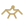

Earthback Graphics Review
Session 24 — SVG brand assets for review before integration. All text uses Georgia (system font) — no external font loading. "Earthback" renders as one word, no space.
Brand Color Palette
Reference — these are the CSS variables already in use across the site.
#1F3A2E
green
#2C4F3B
green-mid
#4A7C5E
green-soft
#C2A56C
clay
#8A5B3F
clay-dark
#7e9b73
moss
#F2EFE6
parchment
#EAE3D3
parchment2
Wordmarks
Full brand lockups. "Dark" is for light backgrounds, "Light" is for dark backgrounds. "Compact" drops the/Project.
Logomarks / Monograms
Standalone symbols. Leaf = primary. Circle = social/avatar. Badge/seed shape = trust marks.
Seed/Shield Badge

Current Favicon (for ref)
Icon Set
24×24 SVG icons to replace emoji throughout the site. Each uses brand colors with subtle fills.
Leaf / Brand
Seedling
 Sun / Solar
Sun / Solar
 Building
Building
 Hammer / Build
Hammer / Build

Handshake
 People
People
Globe
Map Pin
Chat / Reply
Heart / Like
Chart / Data
Shield / Trust
Water
Energy
Badges
Trust marks for profiles, partner pages, email signatures. Horizontal pill format.
Community Member

Early Access / Founding

Map Pins
Custom markers for the community map page. Color-coded by type.
Pins on map-like background
Patterns & Textures
Tileable backgrounds for sections, cards, headers. Very subtle — designed to add depth without distraction.
Leaf Grid (on parchment)
Section content goes here
Topography (on parchment)

Section content goes here
Hemp Weave (on dark green)

Section content goes here
Topography (on dark green)
Section content goes here
Section Divider — Leaf Vine
Section Divider — on dark
File Manifest
Everything in graphics-review/, ready for your designer to review.
graphics-review/
├── PREVIEW.html ← this file
├── wordmarks/
│ ├── earthback-wordmark-dark.svg ← full logo for light backgrounds
│ ├── earthback-wordmark-light.svg ← full logo for dark backgrounds
│ └── earthback-wordmark-compact.svg ← "Earthback" only, no the/Project
├── logomark/
│ ├── eb-monogram-leaf.svg ← primary mark with leaf detail
│ ├── eb-monogram-circle.svg ← circular, for social/avatars
│ └── eb-monogram-badge.svg ← seed/shield shape, for trust marks
├── icons/
│ ├── icon-leaf.svg (replaces 🌿🌱)
│ ├── icon-seedling.svg (growth/food systems)
│ ├── icon-sun.svg (replaces ☀️ — solar/energy)
│ ├── icon-building.svg (replaces 🏗️ — natural building)
│ ├── icon-hammer.svg (replaces 🔨 — projects)
│ ├── icon-handshake.svg (replaces 🤝 — mutual aid)
│ ├── icon-people.svg (community/circles)
│ ├── icon-globe.svg (replaces 🌍 — global)
│ ├── icon-pin.svg (replaces 📍 — location)
│ ├── icon-chat.svg (replaces 💬 — reply)
│ ├── icon-heart.svg (replaces ❤ — like)
│ ├── icon-chart.svg (replaces 📊 — analytics)
│ ├── icon-shield.svg (safety/verification)
│ ├── icon-water.svg (greywater/water systems)
│ └── icon-lightning.svg (energy/power)
├── badges/
│ ├── badge-verified-partner.svg
│ ├── badge-community-member.svg
│ └── badge-early-access.svg
├── map-pins/
│ ├── map-pin-project.svg (forest green — building projects)
│ ├── map-pin-member.svg (moss green — community members)
│ └── map-pin-supplier.svg (clay brown — suppliers/partners)
└── patterns/
├── pattern-leaf-grid.svg (repeatable leaf + dot texture)
├── pattern-topography.svg (contour lines — earth/terrain)
├── pattern-hemp-weave.svg (hemp fiber crosshatch)
└── divider-leaf-vine.svg (horizontal section separator)
Earthback Session 24 · Graphics Package · February 2026